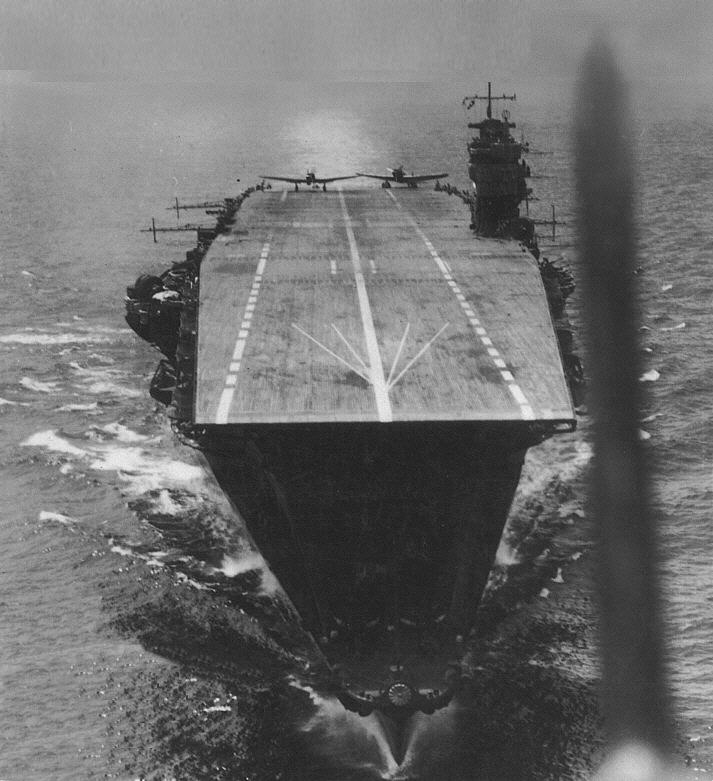

Akagi
Portaviones de Japón, perteneciente a la clase Akagi. Se convirtió de un proyecto de crucero de batalla en portaviones y fue ampliamente reconstruido.

Diseño y función
Akagi pertenecía a la clase Akagi. Proyección de fuerza mediante aviación embarcada. Sus prestaciones se detallan en la tabla técnica, con las fechas o condiciones disponibles en la referencia.
Operaciones y trayectoria
Se convirtió de un proyecto de crucero de batalla en portaviones y fue ampliamente reconstruido. Fue insignia de la fuerza de portaviones que atacó Pearl Harbor y participó en Midway.
Destino final y conservación
Gravemente dañado por bombarderos en picado en Midway y autohundido por fuerzas japonesas en junio de 1942.